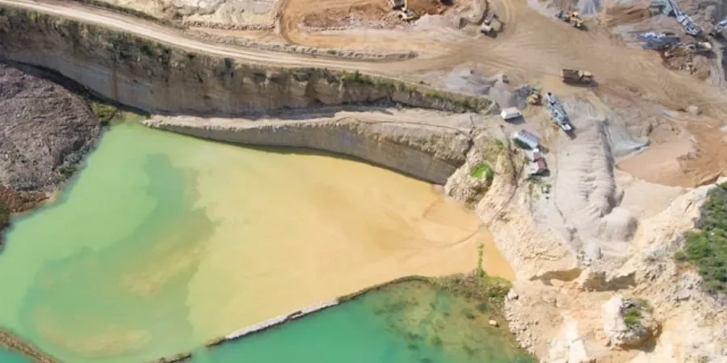

Our Anchorage office provides comprehensive geotechnical engineering services tailored to the unique demands of Southcentral Alaska. From site characterization and subsurface investigations to foundation design and construction monitoring, we deliver code-compliant solutions for residential, commercial, and infrastructure projects. With a focus on local conditions, we employ calibrated equipment and rigorous field testing, including standard penetration testing and advanced lab analysis, to ensure safe and cost-effective outcomes. Our team integrates seamlessly with local contractors and regulatory agencies, offering reliable support from initial exploration through final construction.

Scope of work
Area-specific notes
Our team brings consolidated regional experience across Anchorage’s varied geology, from the Hillside’s glacial tills to the coastal plains of Bootlegger Cove clay. We operate a calibrated laboratory for advanced testing, including oedometer consolidation and triaxial shear, ensuring accurate soil parameters. We maintain close coordination with the Municipality of Anchorage and the Alaska Department of Transportation, streamlining permit approvals. Our engineers are familiar with local construction practices and subcontractors, enabling efficient project delivery for subdivisions, commercial buildings, and public infrastructure. This local focus minimizes delays and reduces risk for our clients.
Watch how it works
Standards used
All geotechnical work in Anchorage follows US standards, primarily ASTM methods for field and lab testing (e.g., ASTM D1586 for SPT, ASTM D2435 for oedometer consolidation). Seismic design adheres to ASCE 7-22, which maps Anchorage into high seismic zones with site-specific response spectra. Foundation recommendations comply with the International Building Code (IBC 2021) and local amendments, while retaining wall and slope stability analyses follow AASHTO LRFD for transportation projects. Our reports are fully code-compliant and tailored to local regulatory requirements.
Q&A
What are the most common geotechnical challenges for building in Anchorage?
The primary challenges include high seismic risk, liquefaction potential in sandy soils, and the presence of sensitive Bootlegger Cove clay, which can undergo significant strength loss during earthquakes. Shallow groundwater and seasonal frost also require careful foundation design. Site-specific investigations are essential to identify these hazards and recommend appropriate mitigation measures, such as deep foundations or Improvement.
How does the Bootlegger Cove Formation affect foundation design in Anchorage?
The Bootlegger Cove clay is a glaciolacustrine deposit with high plasticity and sensitivity, meaning it can lose strength rapidly when disturbed. This material often necessitates deep foundations, such as driven piles or drilled shafts, to transfer loads to more competent underlying strata. In some areas, preloading or wick drains may be used to improve its bearing capacity and reduce long-term settlement.
What seismic design codes apply to geotechnical work in Anchorage?
Seismic design follows ASCE 7-22, which classifies Anchorage in Seismic Design Category D or E depending on site soil conditions. The code requires site-specific ground motion analysis, including consideration of near-fault effects and liquefaction potential. Our geotechnical reports provide the necessary seismic parameters, such as spectral accelerations and soil amplification factors, to meet IBC 2021 requirements.
Do I need a geotechnical investigation for a small residential project in Anchorage?
Yes, even for single-family homes, a geotechnical investigation is strongly recommended due to variable subsurface conditions. Hazards like liquefaction, shallow groundwater, and frost heave can affect slab-on-grade foundations, driveways, and utilities. A limited investigation with test pits or borings can identify these risks and guide cost-effective foundation design, often saving money by avoiding future repairs.